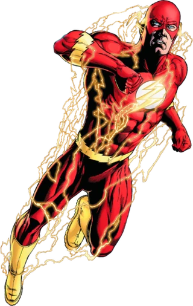

The Flash
Barry Allen is an assistant scientist from the Criminal and Forensic Science Division of Central City Police Department. Barry had a reputation for being very slow, deliberate, and frequently late, which frustrated his fiancé, Iris West. One night, as he was preparing to leave work, a freak lightning bolt struck a nearby shelf in his lab and doused him with a cocktail of unnamed chemicals. As a result, Barry found that he could run extremely fast and had matching reflexes. He became a crimefighter active in Central City.